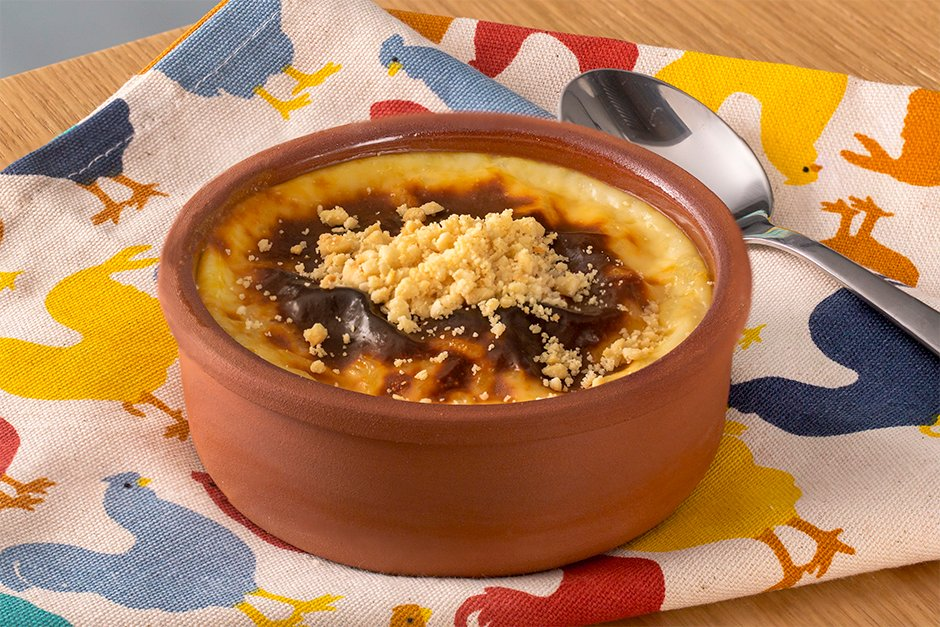

15dk Hazırlık - 20 dk
Pişirme
restaurant
Sütlü tatlılar içerisinde en çok yapılanı sütlaçtır. Kalorisinin düşük olması da sütlacın tercih
edilmesinin sebeplerindendir. Sıcak ya da soğuk bir şekilde tüketebileceğiniz sütlaçlarınız hem yaz
hem de kış günlerinde tercih edebileceğiniz şekildedir.

Sütlaç Tarifi İçin Malzemeler
- 1 lt süt
- 2 çay bardağı pirinç
- 1 litre su
- 3 yemek kaşığı pirinç unu
- 1,5 -2 su bardağı toz şeker eğer çok şekerli sevmiyorsanız 1,5 bardak kullanabilirsiniz.
- 1 su bardağı süt
- Tarçın
Sütlaç Tarifi Nasıl Yapılır?
- Sütlaç yapmak için öncelikle pirinci yıkayıp su ile ateşe koyun.
- Pirinçler uzayıp suyu çekene kadar kaynatın, soğuk sütü ekleyin.
- 1-2 defa karıştırıp, kaynamasını bekleyin.
- Bu arada bir kasede pirinç ununu 1 su bardağı soğuk süt ile ezin.
- Tencerede kaynamakta olan sütten 1-2 kepçe alıp kaseye ekleyin. (pirinç unu ılınmış olmalı).
- Pirinç ununu tencereye ekleyin, ara sıra karıştırarak 10 dakika kadar pişirin.
- Toz şekeri ilave edip karıştırın ve 1-2 taşım kaynatın.
- Sütlacı kaselere paylaştırın./li>
- Soğuyunca sütlaçların üzerlerine tarçın serperek servis edebilirsiniz.
Afiyet olsun...